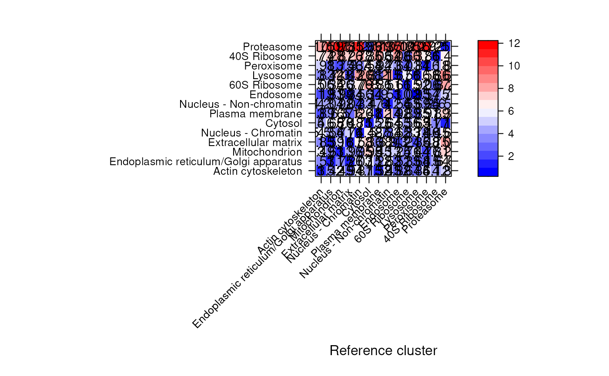
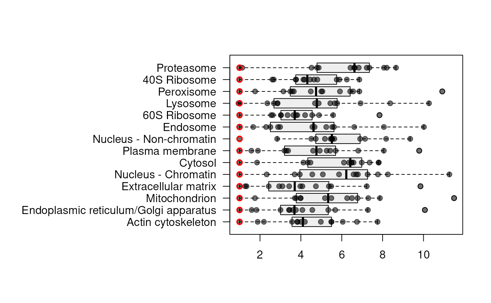

Using pRoloc for spatial proteomics data analysis
Lisa M. Breckels
Computational Proteomics Unit, Cambridge, UKLaurent Gatto
de Duve Institute, UCLouvain, BelgiumSource:
vignettes/v01-pRoloc-tutorial.Rmd
v01-pRoloc-tutorial.RmdAbstract
This tutorial illustrates the usage of thepRoloc R package for the analysis and interpretation of spatial proteomics data. It walks the reader through the creation of MSnSet instances, that hold the quantitative proteomics data and meta-data and introduces several aspects of data analysis, including data visualisation and application of machine learning to predict protein localisation.
Foreword
MSnbase and pRoloc are under active developed; current functionality is evolving and new features are added on a regular basis. This software is free and open-source software. If you use it, please support the project by citing it in publications:
Gatto L. and Lilley K.S. MSnbase - an R/Bioconductor package for isobaric tagged mass spectrometry data visualization, processing and quantitation. Bioinformatics 28, 288-289 (2011).
Gatto L, Breckels LM, Wieczorek S, Burger T, Lilley KS. Mass-spectrometry-based spatial proteomics data analysis using pRoloc and pRolocdata. Bioinformatics. 2014 May 1;30(9):1322-4..
Breckels LM, Mulvey CM, Lilley KS and Gatto L. A Bioconductor workflow for processing and analysing spatial proteomics data. F1000Research 2016, 5:2926 doi: 10.12688/f1000research.10411.1.
If you are using the phenoDisco function, please also cite
Breckels L.M., Gatto L., Christoforou A., Groen A.J., Kathryn Lilley K.S. and Trotter M.W. The effect of organelle discovery upon sub-cellular protein localisation. J Proteomics, S1874-3919(13)00094-8 (2013).
If you are using any of the transfer learning functions, please also cite
Breckels LM, Holden S, Wonjar D, Mulvey CM, Christoforou A, Groen A, Trotter MW, Kohlbacker O, Lilley KS and Gatto L (2016). Learning from heterogeneous data sources: an application in spatial proteomics. PLoS Comput Biol 13;12(5):e1004920. doi: 10.1371/journal.pcbi.1004920.
If you are using any of the Bayesian generative models, please also cite
A Bayesian Mixture Modelling Approach For Spatial Proteomics Oliver M Crook, Claire M Mulvey, Paul D. W. Kirk, Kathryn S Lilley, Laurent Gatto bioRxiv 282269; doi: https://doi.org/10.1101/282269
For an introduction to spatial proteomics data analysis:
Gatto L, Breckels LM, Burger T, Nightingale DJ, Groen AJ, Campbell C, Nikolovski N, Mulvey CM, Christoforou A, Ferro M, Lilley KS. A foundation for reliable spatial proteomics data analysis. Mol Cell Proteomics. 2014 Aug;13(8):1937-52. doi: 10.1074/mcp.M113.036350.
The pRoloc package contains additional vignettes and reference material:
- pRoloc-tutorial: pRoloc tutorial (this vignette).
- pRoloc-ml: Machine learning techniques available in pRoloc.
- pRoloc-transfer-learning: A transfer learning algorithm for spatial proteomics.
- pRoloc-goannotations: Annotating spatial proteomics data.
- pRoloc-bayesian: Bayesian spatial proteomics with pRoloc.
Questions and bugs
You are welcome to contact me directly about pRoloc. For bugs, typos, suggestions or other questions, please file an issue in our issue tracking system (https://github.com/lgatto/pRoloc/issues) providing as much information as possible, a reproducible example and the output of sessionInfo().
If you wish to reach a broader audience for general questions about proteomics analysis using R, you may want to use the Bioconductor support site: https://support.bioconductor.org/.
Introduction
Spatial proteomics
Spatial (or organelle) proteomics is the study of the localisation of proteins inside cells. The sub-cellular compartment can be organelles, i.e. structures defined by lipid bi-layers,macro-molecular assemblies of proteins and nucleic acids or large protein complexes. In this document, we will focus on mass-spectrometry based approaches that assay a population of cells, as opposed as microscopy based techniques that monitor single cells, as the former is the primary concern of pRoloc, although the techniques described below and the infrastructure in place could also be applied the processed image data. The typical experimental use-case for using pRoloc is a set of fractions, originating from a total cell lysate. These fractions can originate from a continuous gradient, like in the LOPIT (Dunkley et al. 2006) or PCP (Foster et al. 2006) approaches, or can be discrete fractions. The content of the fractions is then identified and quantified (using labelled or un-labelled quantitation techniques). Using relative quantitation of known organelle residents, termed organelle markers, organelle-specific profiles along the gradient are determined and new residents are identified based on matching of these distribution profiles. See for example (Gatto et al. 2010) and references therein for a detailed review on organelle proteomics.
It should be noted that large protein complexes, that are not necessarily separately enclosed within their own lipid bi-layer, can be detected by such techniques, as long as a distinct profile can be defined across the fractions.
About R and pRoloc
R (R Development Core Team 2011) is a statistical programming language and interactive working environment. It can be expanded by so-called packages to confer new functionality to users. Many such packages have been developed for the analysis of high-throughput biology, notably through the Bioconductor project (Gentleman et al. 2004). Two packages are of particular interest here, namely MSnbase (Gatto and Lilley 2012) and pRoloc. The former provides flexible infrastructure to store and manipulate quantitative proteomics data and the associated meta-data and the latter implements specific algorithmic technologies to analyse organelle proteomics data.
Among the advantages of R are robust statistical procedures, good visualisation capabilities, excellent documentation, reproducible research1, power and flexibility of the R language and environment itself and a rich environment for specialised functionality in many domains of bioinformatics: tools for many omics technologies, including proteomics, bio-statistics, gene ontology and biological pathway analysis, … Although there exists some specific graphical user interfaces (GUI), interaction with R is executed through a command line interface. While this mode of interaction might look alien to new users, experience has proven that after a first steep learning curve, great results can be achieved by non-programmers. Furthermore, specific and general documentation is plenty and beginners and advanced course material are also widely available.
Once R is started, the first step to enable functionality of a specific packages is to load them using the library function, as shown in the code chunk below:
MSnbase implements the data containers that are used by pRoloc. pRolocdata is a data package that supplies several published organelle proteomics data sets.
As a final setup step, we set the default colour palette for some of our custom plotting functionality to use semi-transparent colours in the code chunk below (see ?setStockcol for details). This facilitates visualisation of overlapping points.
Data structures
Example data
The data used in this tutorial has been published in (Tan et al. 2009). The LOPIT technique (Dunkley et al. 2006) is used to localise integral and associated membrane proteins in Drosophila melanogaster embryos. Briefly, embryos were collected at 0 – 16 hours, homogenised and centrifuged to collect the supernatant, removing cell debris and nuclei. Membrane fractionation was performed on a iodixanol gradient and fractions were quantified using iTRAQ isobaric tags (Ross et al. 2004) as follows: fractions 4/5, 114; fractions 12/13, 115; fraction 19, 116 and fraction 21, 117. Labelled peptides were then separated using cation exchange chromatography and analysed by LS-MS/MS on a QSTAR XL quadrupole-time-of-flight mass spectrometer (Applied Biosystems). The original localisation analysis was performed using partial least square discriminant analysis (PLS-DA). Relative quantitation data was retrieved from the supplementary file pr800866n_si_004.xls (http://pubs.acs.org/doi/suppl/10.1021/pr800866n/suppl_file/pr800866n_si_004.xls) and imported into R as described below. We will concentrate on the first replicate.
Importing and loading data
This section illustrates how to import data in comma-separated value (csv) format into an appropriate R data structure. The first section shows the original csv (comma separated values) spreadsheet, as published by the authors, and how one can read such a file into using the read.csv function. This spreadsheet file is similar to the output of many quantitation software.
In the next section, we show 2 csv files containing a subset of the columns of original pr800866n_si_004-rep1.csv file and another short file, created manually, that will be used to create the appropriate R data.
The original data file
## The original data for replicate 1, available
## from the pRolocdata package
f0 <- dir(system.file("extdata", package = "pRolocdata"),
full.names = TRUE,
pattern = "pr800866n_si_004-rep1.csv")
csv <- read.csv(f0)The three first lines of the original spreadsheet, containing the data for replicate one, are illustrated below (using the function head). It contains 888 rows (proteins) and 16 columns, including protein identifiers, database accession numbers, gene symbols, reporter ion quantitation values, information related to protein identification, …
## Protein.ID FBgn Flybase.Symbol No..peptide.IDs Mascot.score
## 1 CG10060 FBgn0001104 G-ialpha65A 3 179.86
## 2 CG10067 FBgn0000044 Act57B 5 222.40
## 3 CG10077 FBgn0035720 CG10077 5 219.65
## No..peptides.quantified area.114 area.115 area.116 area.117
## 1 1 0.379000 0.281000 0.225000 0.114000
## 2 9 0.420000 0.209667 0.206111 0.163889
## 3 3 0.187333 0.167333 0.169667 0.476000
## PLS.DA.classification Peptide.sequence Precursor.ion.mass
## 1 PM
## 2 PM
## 3
## Precursor.ion.charge pd.2013 pd.markers
## 1 PM unknown
## 2 PM unknown
## 3 unknown unknown
From csv files to R data
There are several ways to create the desired R data object, termed MSnSet, that will be used to perform the actual sub-cellular localisation prediction. Here, we illustrate a method that uses separate spreadsheet files for quantitation data, feature meta-data and sample (fraction) meta-data and the readMSnSet constructor function, that will hopefully be the most straightforward for new users.
## The quantitation data, from the original data
f1 <- dir(system.file("extdata", package = "pRolocdata"),
full.names = TRUE, pattern = "exprsFile.csv")
exprsCsv <- read.csv(f1)
## Feature meta-data, from the original data
f2 <- dir(system.file("extdata", package = "pRolocdata"),
full.names = TRUE, pattern = "fdataFile.csv")
fdataCsv <- read.csv(f2)
## Sample meta-data, a new file
f3 <- dir(system.file("extdata", package = "pRolocdata"),
full.names = TRUE, pattern = "pdataFile.csv")
pdataCsv <- read.csv(f3)-
exprsFile.csvcontaining the quantitation (expression) data for the 888 proteins and 4 reporter tags.
## FBgn X114 X115 X116 X117
## 1 FBgn0001104 0.379000 0.281000 0.225000 0.114000
## 2 FBgn0000044 0.420000 0.209667 0.206111 0.163889
## 3 FBgn0035720 0.187333 0.167333 0.169667 0.476000-
fdataFile.csvcontaining meta-data for the 888 features (here proteins).
## FBgn ProteinID FlybaseSymbol NoPeptideIDs MascotScore
## 1 FBgn0001104 CG10060 G-ialpha65A 3 179.86
## 2 FBgn0000044 CG10067 Act57B 5 222.40
## 3 FBgn0035720 CG10077 CG10077 5 219.65
## NoPeptidesQuantified PLSDA
## 1 1 PM
## 2 9 PM
## 3 3-
pdataFile.csvcontaining samples (here fractions) meta-data. This simple file has been created manually.
## sampleNames Fractions
## 1 X114 4/5
## 2 X115 12/13
## 3 X116 19
## 4 X117 21A self-contained data structure, called MSnSet (defined in the MSnbase package) can now easily be generated using the readMSnSet constructor, providing the respective csv file names shown above and specifying that the data is comma-separated (with sep = ","). Below, we call that object tan2009r1 and display its content.
tan2009r1 <- readMSnSet(exprsFile = f1,
featureDataFile = f2,
phenoDataFile = f3,
sep = ",")
tan2009r1## MSnSet (storageMode: lockedEnvironment)
## assayData: 888 features, 4 samples
## element names: exprs
## protocolData: none
## phenoData
## sampleNames: X114 X115 X116 X117
## varLabels: Fractions
## varMetadata: labelDescription
## featureData
## featureNames: FBgn0001104 FBgn0000044 ... FBgn0001215 (888
## total)
## fvarLabels: ProteinID FlybaseSymbol ... PLSDA (6 total)
## fvarMetadata: labelDescription
## experimentData: use 'experimentData(object)'
## Annotation:
## - - - Processing information - - -
## Quantitation data loaded: Fri Mar 15 10:07:52 2019 using readMSnSet.
## MSnbase version: 2.9.2A shorter input work flow
The readMSnSet2 function provides a simplified import pipeline. It takes a single spreadsheet as input (default is csv) and extract the columns identified by ecol to create the expression data, while the others are used as feature meta-data. ecol can be a character with the respective column labels or a numeric with their indices. In the former case, it is important to make sure that the names match exactly. Special characters like '-' or '(' will be transformed by R into '.' when the csv file is read in. Optionally, one can also specify a column to be used as feature names. Note that these must be unique to guarantee the final object validity.
ecol <- paste("area", 114:117, sep = ".")
fname <- "Protein.ID"
eset <- readMSnSet2(f0, ecol, fname)
eset## MSnSet (storageMode: lockedEnvironment)
## assayData: 888 features, 4 samples
## element names: exprs
## protocolData: none
## phenoData: none
## featureData
## featureNames: CG10060 CG10067 ... CG9983 (888 total)
## fvarLabels: Protein.ID FBgn ... pd.markers (12 total)
## fvarMetadata: labelDescription
## experimentData: use 'experimentData(object)'
## Annotation:
## - - - Processing information - - -
## MSnbase version: 2.9.2The ecol columns can also be queried interactively from R using the getEcols and grepEcols function. The former return a character with all column names, given a splitting character, i.e. the separation value of the spreadsheet (typically "," for csv, "\t" for tsv, …). The latter can be used to grep a pattern of interest to obtain the relevant column indices.
## [1] "\"Protein ID\"" "\"FBgn\""
## [3] "\"Flybase Symbol\"" "\"No. peptide IDs\""
## [5] "\"Mascot score\"" "\"No. peptides quantified\""
## [7] "\"area 114\"" "\"area 115\""
## [9] "\"area 116\"" "\"area 117\""
## [11] "\"PLS-DA classification\"" "\"Peptide sequence\""
## [13] "\"Precursor ion mass\"" "\"Precursor ion charge\""
## [15] "\"pd.2013\"" "\"pd.markers\""## [1] 7 8 9 10## MSnSet (storageMode: lockedEnvironment)
## assayData: 888 features, 4 samples
## element names: exprs
## protocolData: none
## phenoData: none
## featureData
## featureNames: 1 2 ... 888 (888 total)
## fvarLabels: Protein.ID FBgn ... pd.markers (12 total)
## fvarMetadata: labelDescription
## experimentData: use 'experimentData(object)'
## Annotation:
## - - - Processing information - - -
## MSnbase version: 2.9.2The phenoData slot can now be updated accordingly using the replacement functions phenoData<- or pData<- (see ?MSnSet for details).
The MSnSet class
Although there are additional specific sub-containers for additional meta-data (for instance to make the object MIAPE compliant), the feature (the sub-container, or slot featureData) and sample (the phenoData slot) are the most important ones. They need to meet the following validity requirements (see figure below):
the number of row in the expression/quantitation data and feature data must be equal and the row names must match exactly, and
the number of columns in the expression/quantitation data and number of row in the sample meta-data must be equal and the column/row names must match exactly.
It is common, in the context of pRoloc to update the feature meta-data (described in section @ref(sec:analysis)) by adding new columns, without breaking the objects validity. Similarly, the sample meta-data can also be updated by adding new sample variables. A detailed description of the MSnSet class is available by typing ?MSnSet in the R console.

Dimension requirements for the respective expression, feature and sample meta-data slots.
The individual parts of this data object can be accessed with their respective accessor methods:
- the quantitation data can be retrieved with
exprs(tan2009r1), - the feature meta-data with
fData(tan2009r1)and - the sample meta-data with
pData(tan2009r1).
The advantage of this structure is that it can be manipulated as a whole and the respective parts of the data object will remain compatible. The code chunk below, for example, shows how to extract the first 5 proteins and 2 first samples:
## [1] 5 2## X114 X115
## FBgn0001104 0.379000 0.281000
## FBgn0000044 0.420000 0.209667
## FBgn0035720 0.187333 0.167333
## FBgn0003731 0.247500 0.253000
## FBgn0029506 0.216000 0.183000Several data sets, including the 3 replicates from (Tan et al. 2009), are distributed as MSnSet instances in the pRolocdata package. Others include, among others, the Arabidopsis thaliana LOPIT data from (Dunkley et al. 2006) (dunkley2006) and the mouse PCP data from (Foster et al. 2006) (foster2006). Each data set can be loaded with the data function, as show below for the first replicate from (Tan et al. 2009).
The original marker proteins are available as a feature meta-data variables called markers.orig and the output of the partial least square discriminant analysis, applied in the original publication, in the PLSDA feature variable. The most up-to-date marker list for the experiment can be found in markers. This feature meta-data column can be added from a simple csv markers files using the addMarkers function - see ?addMarkers for details.
The organelle markers are illustrated below using the convenience function getMarkers, but could also be done manually by accessing feature variables directly using fData().
## organelleMarkers
## ER Golgi mitochondrion PM unknown
## 20 6 14 15 833## organelleMarkers
## ER/Golgi mitochondrion PM unknown
## 235 74 180 399Important As can be seen above, some proteins are labelled "unknown", defining non marker proteins. This is a convention in many pRoloc functions. Missing annotations (empty string) will not be considered as of unknown localisation; we prefer to avoid empty strings and make the absence of known localisation explicit by using the "unknown" tag. This information will be used to separate marker and non-marker (unlabelled) proteins when proceeding with data visualisation and clustering (sections @ref(sec:viz) and @ref(sec:usml)) and classification analysis (section @ref(sec:sml)).
pRoloc’s organelle markers
The pRoloc package distributes a set of markers that have been obtained by mining the pRolocdata datasets and curation by various members of the Cambridge Centre for Proteomics. The available marker sets can be obtained and loaded using the pRolocmarkers function:
## 7 marker lists available:
## Arabidopsis thaliana [atha]:
## Ids: TAIR, 543 markers
## Drosophila melanogaster [dmel]:
## Ids: Uniprot, 179 markers
## Gallus gallus [ggal]:
## Ids: IPI, 102 markers
## Homo sapiens [hsap]:
## Ids: Uniprot, 872 markers
## Mus musculus [mmus]:
## Ids: Uniprot, 937 markers
## Saccharomyces cerevisiae [scer_sgd]:
## Ids: SGD, 259 markers
## Saccharomyces cerevisiae [scer_uniprot]:
## Ids: Uniprot Accession, 259 markers## Q7JZN0 Q7KLV9 Q9VIU7 P15348 Q7KMP8
## "ER" "Proteasome" "ER" "Nucleus" "Proteasome"
## O01367
## "Nucleus"##
## Cytoskeleton ER Golgi Lysosome mitochondrion
## 7 24 7 8 15
## Nucleus Peroxisome PM Proteasome Ribosome 40S
## 21 4 25 14 22
## Ribosome 60S
## 32These markers can then be added to a new MSnSet using the addMarkers function by matching the marker names (protein identifiers) and the feature names of the MSnSet. See ?addMarkers for examples.
Data processing
The quantitation data obtained in the supplementary file is normalised to the sum of intensities of each protein; the sum of fraction quantitation for each protein equals 1 (considering rounding errors). This can quickly be verified by computing the row sums of the expression data.
## Min. 1st Qu. Median Mean 3rd Qu. Max.
## 0.9990 0.9999 1.0000 1.0000 1.0001 1.0010The normalise method (also available as normalize) from the MSnbase package can be used to obtain relative quantitation data, as illustrated below on another iTRAQ test data set, available from MSnbase. Several normalisation methods are available and described in ?normalise. For many algorithms, including classifiers in general and support vector machines in particular, it is important to properly per-process the data. Centering and scaling of the data is also available with the scale method.
In the code chunk below, we first create a test MSnSet instance2 and illustrate the effect of normalise(..., method = "sum").
## create a small illustrative test data
data(itraqdata)
itraqdata <- quantify(itraqdata, method = "trap",
reporters = iTRAQ4)
## the quantification data
head(exprs(itraqdata), n = 3)## iTRAQ4.114 iTRAQ4.115 iTRAQ4.116 iTRAQ4.117
## X1 1347.6158 2247.3097 3927.6931 7661.1463
## X10 739.9861 799.3501 712.5983 940.6793
## X11 27638.3582 33394.0252 32104.2879 26628.7278## Min. 1st Qu. Median Mean 3rd Qu. Max. NA's
## 59.06 5638.09 15344.43 38010.87 42256.61 305739.04 1## normalising to the sum of feature intensitites
itraqnorm <- normalise(itraqdata, method = "sum")
processingData(itraqnorm)## - - - Processing information - - -
## Data loaded: Wed May 11 18:54:39 2011
## Updated from version 0.3.0 to 0.3.1 [Fri Jul 8 20:23:25 2016]
## iTRAQ4 quantification by trapezoidation: Fri Mar 15 10:07:54 2019
## Normalised (sum): Fri Mar 15 10:07:54 2019
## MSnbase version: 1.1.22## iTRAQ4.114 iTRAQ4.115 iTRAQ4.116 iTRAQ4.117
## X1 0.08875373 0.1480074 0.2586772 0.5045617
## X10 0.23178064 0.2503748 0.2232022 0.2946424
## X11 0.23077081 0.2788287 0.2680598 0.2223407## Min. 1st Qu. Median Mean 3rd Qu. Max. NA's
## 1 1 1 1 1 1 1Note above how the processing undergone by the MSnSet instances itraqdata and itraqnorm is stored in another such specific sub-container, the processingData slot.
The different features (proteins in the tan2009r1 data above, but these could also represent peptides or MS\(^2\) spectra) are characterised by unique names. These can be retrieved with the featureNames function.
## [1] "P20353" "P53501" "Q7KU78" "P04412" "Q7KJ73" "Q7JZN0"If we look back at section @ref(sec:csv), we see that these have been automatically assigned using the first columns in the exprsFile.csv and fdataFile.csv files. It is thus crucial for these respective first columns to be identical. Similarly, the sample names can be retrieved with sampleNames(tan2009r1).
Data visualisation
The following sections will focus on two closely related aspects, data visualisation and data analysis (i.e. organelle assignments). Data visualisation is used in the context on quality control, to convince ourselves that the data displays the expected properties so that the output of further processing can be trusted. Visualising results of the localisation prediction is also essential, to control the validity of these results, before proceeding with orthogonal (and often expensive) dry or wet validation.
Profile plots
The underlying principle of gradient approaches is that we have separated organelles along the gradient and by doing so, generated organelle-specific protein distributions along the gradient fractions. The most natural visualisation is shown on figure @ref(fig:plotdist1), obtained using the sub-setting functionality of MSnSet instances and the plotDist function, as illustrated below.
## indices of the mito markers
j <- which(fData(tan2009r1)$markers.orig == "mitochondrion")
## indices of all proteins assigned to the mito
i <- which(fData(tan2009r1)$PLSDA == "mitochondrion")
plotDist(tan2009r1[i, ],
markers = featureNames(tan2009r1)[j])Distribution of protein intensities along the fractions of the separation gradient for 4 organelles: mitochondrion (red), ER/Golgi (blue, ER markers and green, Golgi markers) and plasma membrane (purple).
Sub-cellular cluster dendrogram
To gain a quick overview of the distance/similarity between the sub-cellular clusters, it can useful to compare average marker profiles, rather than all profiles, as presented in the profile plots above. The mrkHClust calculates average class profiles and generates the resulting dendrogram.
Hierarchical clustering. Average distance between organelle classes.
On figure @ref(fig:dendro), we see that the lysosome and the ribosome 60S are separated by the smallest distance. The advantage of this representation is that it provides a quick snapshot of the average similarity between organelles using the complete profiles (as opposed to a PCA plot, discussed in the next section). The main drawback is that it ignores any variability in individual markers (cluster thighness). It is however a good guide for a more thorough exploration of the data, as described in the next sections.
Note the colours of the labels on the dendrogram (figure @ref(fig:dendro)), which match the colours used to annotate PCA plots, described in the next section (figure @ref(fig:plot2d). These colours are defined at the session level (see getStockcol and setStockcol) and re-used throughout pRoloc for consistent annotation.
Average organelle class profile plot
We can also visualise the average organelle class profiles generated by mrkConsProfiles using plotConsProfiles. We can optionally order the organelle classes on the y-axis according to the heirachical clustering from mrkHClust.
See ?mrkHClust for more details
## histogram
hc <- mrkHClust(tan2009r1, plot=FALSE)
## order of markers according to histogram
mm <- getMarkerClasses(tan2009r1)
m_order <- levels(factor(mm))[order.dendrogram(hc)]
## average marker profile
fmat <- mrkConsProfiles(tan2009r1)
plotConsProfiles(fmat, order=m_order)Average organelle class profiles. Protein intensity indicated by colour. Organelle classes ordered by hierarchical clustering
Dimensionality reduction
Alternatively, we can combine all organelle groups in one single 2 dimensional figure by applying a dimensionality reduction technique such as Principal Component Analysis (PCA) using the plot2D function (see figure @ref(fig:plot2d)). The protein profile vectors are summarised into 2 values that can be visualised in two dimensions, so that the variability in the data will be maximised along the first principal component (PC1). The second principal component (PC2) is then chosen as to be orthogonal to PC1 while explaining as much variance in the data as possible, and so on for PC3, PC4, etc.
Using a PCA representation to visualise a spatial proteomics experiment, we can easily plot all the proteins on the same figure as well a many sub-cellular clusters. These clusters are defined in a feature meta-data column (slot featureData, accessed as a data.frame with the fData function) that is declared with the fcol argument (default is "markers" which contains the most current known markers for this experiment, while the original markers published with the data can be found in the slot "markers.orig").
plot2D(tan2009r1, fcol = "markers")
addLegend(tan2009r1, fcol = "markers", cex = .7,
where = "bottomright", ncol = 2)
PCA plot. Representation of the proteins of tan2009r1 after reduction of the 4 reporter quantitation data to 2 principal components.
As the default value for the fcol argument is "markers", it is not necessary to specify it. It is however mandatory to specify other annotation feature variables, such as to visualise the set of markers described in the original publication.
plot2D(tan2009r1, fcol = "markers.orig")
addLegend(tan2009r1, fcol = "markers.orig", where = "bottomright")
PCA plot. Reduced set of markers for the tan2009r1 data projected onto 2 principal components.
It is also possible to visualise the data along 3 dimensions using the plot3D function, which works like the 2 dimension version (figure below). The resulting figure can be rotated by the user.

Snapshot of the 3-dimensional PCA plot. The tan2009r1 data is represented along the first 3 principal components.
As can be seen on the figures @ref(fig:plot2d), @ref(fig:plot2dorg) and on the 3D plot above, we indicate on the axis labels the percentage of total variance explained by the individual PCs. It is not unusual to reach over 75% along the first two PCs, even for experiments with several tens of fractions. One can calculate this information for all PCs by setting method = "scree" in plot2D. On figure @ref(fig:scree), we see that the four PCs in the tan2009r1 data account for 58.53, 29.96, 11.52 and 0 percent of the total variance.
Percentage of variance explained.
A variety of dimensionality reduction methods are available in plot2D: PCA, MDS, kpca, lda, t-SNE, nipals, hexbin, none, scree. Except for scree (see above) and none (no data transformation, which can be useful when the data is already transformed and only needs to be plotted), these can used to produce visualisation of the data in two dimensions. Two are worth some discussion here; the readers are redirected to the manual page for more details.
Linear discriminant analysis (LDA) will project the protein occupancy profiles in a new set of dimensions using as a criterion the separation of marker classes by maximising the between class variance to the within class variance ratio. As opposed to the unsupervised PCA, the supervised LDA should not be used as an to explore the data or as a quality control, but can be useful to assess if one or more organelles have been preferentially separated.
The t-Distributed Stochastic Neighbour Embedding (t-SNE)3 (Maaten and Hinton 2008) is widely applied in many areas in computational biology and more generally field that need to visualise high-dimensional data. The t-SNE method is non-linear, and will emphasise separation of different features while grouping features with similar profiles. In addition, different transformations are applied on different regions leading to plots that can substantially differ from a PCA plot. As a result, proximity in two dimensions and tightness of the clusters can’t be related to these quantities in the original data. See How to Use t-SNE Effectively4 for a useful non-technical introduction.
The results of the algorithm crucially depend on the values of its input parameters, in particular the perplexity, which balances global and local aspects of the data. The suggested range of value ranges from 5 to 50, and should not be greater than the number of data points (which we can assume not to be the case in modern spatial proteomics experiments). Below, we test the effect of this parameter along the suggested range, including the default value of 30, at which the algorithm converges.
perps <- sort(c(30, seq(5, 50, 15)))
data(HEK293T2011)
par(mfrow = c(2, 3))
plot2D(HEK293T2011, main = "PCA")
sapply(perps,
function(perp) {
plot2D(HEK293T2011, method = "t-SNE",
methargs = list(perplexity = perp))
title(main = paste("t-SNE, perplexity", perp))
})
Effect of t-SNE’s perplexity parameter on the human HEK293T2011 data.
Other parameters that can effect the results are the number of iterations and the learning rate epsilon.
The t-SNE algorithm takes much more time to complete than the other available methods. In such cases, saving the results and re-plotting with method none can be useful (see ?plot2D). In the case of this document, the figure above, was pre-generated rather than computed upon compilation.
Features of interest
In addition to highlighting sub-cellular niches as coloured clusters on the PCA plot, it is also possible to define some arbitrary features of interest that represent, for example, proteins of a particular pathway or a set of interaction partners. Such sets of proteins are recorded as FeaturesOfInterest instances, as illstrated below (using the ten first features of our experiment):
foi1 <- FeaturesOfInterest(description = "Feats of interest 1",
fnames = featureNames(tan2009r1[1:10]))
description(foi1)## [1] "Feats of interest 1"## [1] "P20353" "P53501" "Q7KU78" "P04412" "Q7KJ73" "Q7JZN0" "Q7KLV9"
## [8] "Q9VM65" "Q9VCK0" "Q9VIU7"Several such features of interest can be combined into collections:
foi2 <- FeaturesOfInterest(description = "Feats of interest 2",
fnames = featureNames(tan2009r1[880:888]))
foic <- FoICollection(list(foi1, foi2))
foic## A collection of 2 features of interest.FeaturesOfInterest instances can now be overlaid on the PCA plot with the highlightOnPlot function. The highlightOnPlot3D can be used to overlay data onto a 3 dimensional figure produced by plot3D.
plot2D(tan2009r1, fcol = "PLSDA")
addLegend(tan2009r1, fcol = "PLSDA",
where = "bottomright",
cex = .7)
highlightOnPlot(tan2009r1, foi1,
col = "black", lwd = 2)
highlightOnPlot(tan2009r1, foi2,
col = "purple", lwd = 2)
legend("topright", c("FoI 1", "FoI 2"),
bty = "n", col = c("black", "purple"),
pch = 1)Adding features of interest on a PCA plot.
See ?FeaturesOfInterest and ?highlightOnPlot for more details.
Interactive visualisation
The pRolocGUI application allows one to explore the spatial proteomics data using an interactive, web-based interface (RStudio and Inc. 2014). The package is available from Bioconductor and can be installed and started as follows:

Screenshot of the pRolocGUI interface. The GUI is also available as an online app for the hyperLOPIT experiment from (Christoforou et al. 2016) at https://lgatto.shinyapps.io/christoforou2015/.
More details are available in the vignette that can be started from the application by clicking on any of the question marks, by starting the vignette from R with vignette("pRolocGUI") or can be accessed online (http://bioconductor.org/packages/devel/bioc/vignettes/pRolocGUI/inst/doc/pRolocGUI.html).
Assessing sub-cellular resolution
The sub-cellular resolution of a spatial proteomics experiment, i.e. the quantitation of how well the respective sub-cellular niches are separated, can be computed with the QSep function. Briefly, this function compares, for each pairs of sub-cellular niches, the ratio between the the average Euclidean distance between niche i and j and the the average within distance of cluster j. A large ratio indicates that i and j are well separated with respect to the thighness of cluster j. The larger the distances, the better the spatial proteomics experiment.
Below, we calulate and visualise the QSep distances for the hyperLOPIT2015 data:
library("pRolocdata")
data(hyperLOPIT2015)
## Create the object and get a summary
hlq <- QSep(hyperLOPIT2015)
hlq## Object of class 'QSep'.
## Data: hyperLOPIT2015
## With 14 sub-cellular clusters.

See Assessing sub-cellular resolution in spatial proteomics experiments (Gatto, Breckels, and Lilley 2018) for details, including a large meta-analysis on 29 different spatial proteomics experiments.
Data analysis
Classification of proteins, i.e. assigning sub-cellular localisation to proteins, is the main aspect of the present data analysis. The principle is the following and is, in its basic form, a 2 step process. First, an algorithm learns from the known markers that are shown to him and models the data space accordingly. This phase is also called the training phase. In the second phase, un-labelled proteins, i.e. those that have not been labelled as resident of any organelle, are matched to the model and assigned to a group (an organelle). This 2 step process is called machine learning (ML), because the computer (machine) learns by itself how to recognise instances that possess certain characteristics and classifies them without human intervention. That does however not mean that results can be trusted blindly.
In the above paragraph, we have defined what is called supervised ML, because the algorithm is presented with some know instances from which it learns (see section @ref(sec:sml)). Alternatively, un-supervised ML does not make any assumptions about the group memberships, and uses the structure of the data itself to defined sub-groups (see section @ref(sec:usml)). It is of course possible to classify data based on labelled and unlabelled data. This extension of the supervised classification problem described above is called semi-supervised learning. In this case, the training data consists of both labelled and unlabelled instances with the obvious goal of generating a better classifier than would be possible with the labelled data only. The phenoDisco algorithm, will be illustrated in that context (section @ref(sec:ssml)).
Unsupervised ML
The plot2D can also be used to visualise the data on a PCA plot omitting any marker definitions, as shown on figure @ref(fig:plot2dnull). This approach avoids any bias towards marker definitions and concentrate on the data and its underlying structure itself.
Plain PCA representation of the tan2009r1 data.
Alternatively, pRoloc also gives access to MLInterfaces’s MLean unified interface for, among others, unsupervised approaches using k-means (figure @ref(fig:plotKmeans)), hierarchical (figure @ref(fig:plotHclust)) or partitioning around medoids (figure @ref(fig:plotPam)), clustering.
k-means clustering on the tan2009r1 data.
hcl <- MLearn( ~ ., tan2009r1,
hclustI(distFun = dist,
cutParm = list(k = 5)))
plot(hcl, labels = FALSE)
Hierarchical clustering on the tan2009r1 data.
Partitioning around medoids on the tan2009r1 data.
Supervised ML
In this section, we show how to use pRoloc to run a typical supervised ML analysis. Several ML methods are available, including k-nearest neighbour (knn), partial least square discriminant analysis (plsda), random forest (rf), support vector machines (svm), The detailed description of each method is outside of the scope of this document. We will use support vector machines to illustrate a typical pipeline and the important points that should be paid attention to. These points are equally valid and work, from a pRoloc user perspective, exactly the same for the other approaches.
Classification algorithm parameters optimisation
Before actually generating a model on the new markers and classifying unknown residents, one has to take care of properly setting the model parameters. Wrongly set parameters can have a very negative impact on classification performance. To do so, we create testing (to model) and training (to predict) subsets using known residents, i.e. marker proteins. By comparing observed and expected classification prediction, we can assess how well a given model works using the macro F1 score (see below). This procedure is repeated for a range of possible model parameter values (this is called a grid search), and the best performing set of parameters is then used to construct a model on all markers and predict un-labelled proteins. For this parameter optimisation procedure to perform well and produce useful results, it is essential to run it with a reasonable amount of markers. In our experience, 15 such marker proteins are necessary.
Model accuracy is evaluated using the F1 score, \(F1 = 2 ~ \frac{precision \times recall}{precision + recall}\), calculated as the harmonic mean of the precision (\(precision = \frac{tp}{tp+fp}\), a measure of exactness – returned output is a relevant result) and recall (\(recall=\frac{tp}{tp+fn}\), a measure of completeness – indicating how much was missed from the output). What we are aiming for are high generalisation accuracy, i.e high \(F1\), indicating that the marker proteins in the test data set are consistently correctly assigned by the algorithms.
In order to evaluate how well a classifier performs on profiles it was not exposed to during its creation, we implemented the following schema. Each set of marker protein profiles, i.e. labelled with known organelle association, are separated into training and test/validation partitions by sampling 80% of the profile corresponding to each organelle (i.e. stratified) without replacement to form the training partition \(S_{tr}\) with the remainder becoming the test/validation partition \(S_{ts}\). The svm regularisation parameter \(C\) and Gaussian kernel width \(sigma\) are selected using a further round of stratified five-fold cross-validation on each training partition. All pairs of parameters \((C_i, sigma_j)\) under consideration are assessed using the macro F1 score and the pair that produces the best performance is subsequently employed in training a classifier on all training profiles \(S_{tr}\) prior to assessment on all test/validation profiles \(S_{ts}\). This procedure is repeated \(N\) times (in the example below 10) in order to produce \(N\) macro F1 estimated generalisation performance values (figure @ref(fig:params)). This procedure is implemented in the svmOptimisation. See ?svmOptimisation for details, in particular the range of \(C\) and \(sigma\) parameters and how the relevant feature variable is defined by the fcol parameters, which defaults to "markers".
In the interest of time, the optimisation is not executed but loaded with
fn <- dir(system.file("extdata", package = "pRoloc"),
full.names = TRUE, pattern = "params.rda")
load(fn)## Object of class "GenRegRes"
## Algorithm: svm
## Hyper-parameters:
## cost: 0.0625 0.125 0.25 0.5 1 2 4 8 16
## sigma: 0.01 0.1 1 10 100 1000
## Design:
## Replication: 10 x 5-fold X-validation
## Partitioning: 0.2/0.8 (test/train)
## Results
## macro F1:
## Min. 1st Qu. Median Mean 3rd Qu. Max.
## 0.8889 0.8889 1.0000 0.9556 1.0000 1.0000
## best sigma: 0.1 1
## best cost: 0.5 1
Assessing parameter optimisation. On the left, we see the respective distributions of the 10 macro F1 scores for the best cost/sigma parameter pairs. See also the output of f1Count in relation to this plot. On the right, we see the averaged macro F1 scores, for the full range of parameter values.

Assessing parameter optimisation. On the left, we see the respective distributions of the 10 macro F1 scores for the best cost/sigma parameter pairs. See also the output of f1Count in relation to this plot. On the right, we see the averaged macro F1 scores, for the full range of parameter values.
In addition to the plots on figure @ref(fig:params), f1Count(params) returns, for each combination of parameters, the number of best (highest) F1 observations. One can use getParams to see the default set of parameters that are chosen based on the executed optimisation. Currently, the first best set is automatically extracted, and users are advised to critically assess whether this is the most wise choice.
## 0.5 1
## 0.1 1 0
## 1 NA 5## sigma cost
## 0.1 0.5Important It is essential to emphasise that the accuracy scores obtained during parameter optimisation are only a reflection of the classification performance on a set of distinct and ideally separated spatial clusters. Here, we assume that the data is characterised by good separation of the various spatial niches which are reflected by sub-cellular markers. Quality control of the data and the markers using the visualisation described in section @ref(sec:viz) is essential and subsequent analyses are doomed to fail in the absence of such separation.
These classification scores are not representative of the reliability of the final classification (described in section @ref(sec:sml)), in particular along the boundaries separating the different sub-cellular niches. High scores at the optimisation stage are a requirement to proceed with the analysis, but are by no means indicative of the false positive rate in the final sub-cellular assignment of non-marker proteins.
Classification
We can now re-use the result from our parameter optimisation (a best cost/sigma pair is going to be automatically extracted, using the getParams method, although it is possible to set them manually), and use them to build a model with all the marker proteins and predict unknown residents using the svmClassification function (see the manual page for more details). By default, the organelle markers will be defined by the "markers" feature variables (and can be defined by the fcol parameter) e.g. here we use the original markers in "markers.orig" as a use case. New feature variables containing the organelle assignments and assignment probabilities, called scores hereafter, are automatically added to the featureData slot; in this case, using the svm and svm.scores labels.
Important The calculation of the classification probabilities is dependent on the classification algorithm. These probabilities are not to be compared across algorithms; they do not reflect any biologically relevant sub-cellular localisation probability but rather an algorithm-specific classification confidence score.}
## manual setting of parameters
svmres <- svmClassification(tan2009r1, fcol = "markers.orig",
sigma = 1, cost = 1)## using default best parameters
svmres <- svmClassification(tan2009r1, fcol = "markers.orig",
assessRes = params)
processingData(svmres)## - - - Processing information - - -
## Added markers from 'mrk' marker vector. Thu Jul 16 22:53:44 2015
## Performed svm prediction (sigma=0.1 cost=0.5) Fri Mar 15 10:08:01 2019
## MSnbase version: 1.17.12## [1] "markers" "markers.tl" "svm" "svm.scores"The original markers, classification results and scores can be accessed with the fData accessor method, e.g. fData(svmres)$svm or fData(svmres)$svm.scores. Two helper functions, getMarkers and getPredictions are available and add some level of automation and functionality, assuming that the default feature labels are used. Both (invisibly) return the corresponding feature variable (the markers or assigned classification) and print a summary table. The fcol parameter must be specified for getPredictions. It is also possible to defined a classification probability below which classifications are set to "unknown".
## ans
## Cytoskeleton ER Golgi Lysosome mitochondrion
## 7 241 39 8 219
## Nucleus Peroxisome PM Proteasome Ribosome 40S
## 21 4 282 15 20
## Ribosome 60S
## 32p1 <- fData(p1)$svm.pred
minprob <- median(fData(svmres)$svm.scores)
p2 <- getPredictions(svmres, fcol = "svm", t = minprob)## ans
## Cytoskeleton ER Golgi Lysosome mitochondrion
## 7 174 21 8 102
## Nucleus Peroxisome PM Proteasome Ribosome 40S
## 21 4 148 15 20
## Ribosome 60S unknown
## 32 336## p2
## p1 Cytoskeleton ER Golgi Lysosome mitochondrion Nucleus
## Cytoskeleton 7 0 0 0 0 0
## ER 0 174 0 0 0 0
## Golgi 0 0 21 0 0 0
## Lysosome 0 0 0 8 0 0
## mitochondrion 0 0 0 0 102 0
## Nucleus 0 0 0 0 0 21
## Peroxisome 0 0 0 0 0 0
## PM 0 0 0 0 0 0
## Proteasome 0 0 0 0 0 0
## Ribosome 40S 0 0 0 0 0 0
## Ribosome 60S 0 0 0 0 0 0
## p2
## p1 Peroxisome PM Proteasome Ribosome 40S Ribosome 60S
## Cytoskeleton 0 0 0 0 0
## ER 0 0 0 0 0
## Golgi 0 0 0 0 0
## Lysosome 0 0 0 0 0
## mitochondrion 0 0 0 0 0
## Nucleus 0 0 0 0 0
## Peroxisome 4 0 0 0 0
## PM 0 148 0 0 0
## Proteasome 0 0 15 0 0
## Ribosome 40S 0 0 0 20 0
## Ribosome 60S 0 0 0 0 32
## p2
## p1 unknown
## Cytoskeleton 0
## ER 67
## Golgi 18
## Lysosome 0
## mitochondrion 117
## Nucleus 0
## Peroxisome 0
## PM 134
## Proteasome 0
## Ribosome 40S 0
## Ribosome 60S 0To graphically illustrate the organelle-specific score distributions, we can use a boxplot and plot the scores for the respective predicted svm classes, as shown on figure @ref(fig:predscores). As can be seen, different organelles are characterised by different score distributions. Using a unique threshold (minprob with value 0.78 above) results in accepting 72% of the initial ER predictions and only 47% of the mitochondrion predictions. The getPredictions function also accepts organelle-specific score thresholds. Below, we calculate organelle-specific median scores.
boxplot(svm.scores ~ svm, data = fData(svmres),
ylab = "SVM scores")
abline(h = minprob, lwd = 2, lty = 2)Organelle-specific SVM score distributions.
## ER Golgi mitochondrion PM
## 0.8374491 0.6318175 0.7483629 0.7725315Using these scores equates to choosing the 50% predictions with highest scores for organelle.
## ans
## Cytoskeleton ER Golgi Lysosome mitochondrion
## 7 135 26 8 124
## Nucleus Peroxisome PM Proteasome Ribosome 40S
## 21 4 158 15 20
## Ribosome 60S unknown
## 32 338## MSnSet (storageMode: lockedEnvironment)
## assayData: 888 features, 4 samples
## element names: exprs
## protocolData: none
## phenoData
## sampleNames: X114 X115 X116 X117
## varLabels: Fractions
## varMetadata: labelDescription
## featureData
## featureNames: P20353 P53501 ... P07909 (888 total)
## fvarLabels: FBgn Protein.ID ... svm.pred (19 total)
## fvarMetadata: labelDescription
## experimentData: use 'experimentData(object)'
## pubMedIds: 19317464
## Annotation:
## - - - Processing information - - -
## Added markers from 'mrk' marker vector. Thu Jul 16 22:53:44 2015
## Performed svm prediction (sigma=0.1 cost=0.5) Fri Mar 15 10:08:01 2019
## Added svm predictions according to thresholds: ER = 0.84, Golgi = 0.63, mitochondrion = 0.75, PM = 0.77 Fri Mar 15 10:08:01 2019
## MSnbase version: 1.17.12We can now visualise these results using the plotting functions presented in section @ref(sec:usml), as shown on figure @ref(fig:svmres). We clearly see that besides the organelle marker clusters that have been assigned high confidence members, many other proteins have substantially lower prediction scores.
ptsze <- exp(fData(svmres)$svm.scores) - 1
plot2D(svmres, fcol = "svm", fpch = "markers.orig",
cex = ptsze)
addLegend(svmres, fcol = "svm",
where = "bottomright",
cex = .5)
Representation of the svm prediction on the tan2009r1 data set. The svm scores have been used to set the point size (cex argument; the scores have been transformed to emphasise the extremes). Different symbols (fpch) are used to differentiate markers and new assignments.
Bayesian generative models
We also offer generative models that, as opposed to the descriptive classifier presented above, explicitly model the spatial proteomics data. In pRoloc, we probose two models using T-augmented Gaussian mixtures using repectively a Expectration-Maximisation approach to maximum a posteriori estimation of the model parameters (TAGM-MAP), and an MCMC approach (TAGM-MCMC) that enables a proteome-wide uncertainty quantitation. These methods are described in the pRoloc-bayesian vignette. For a details description of the methods and their validation, please refer to (Crook et al. 2018).
Semi-supervised ML
It is obvious that the original set of markers initially used (ER, Golgi, mitochondrion, PM) is not a biologically realistic representation or the organelle diversity. Manually finding markers is however time consuming, as it requires careful verification of the annotation, and possibly critical for the subsequent analysis, as markers are directly used in the training phase of the supervised ML approach.
As can be seen in the PCA plots above, there is inherent structure in the data that can be made use of to automate the detection of new clusters. The phenoDisco algorithm (Breckels et al. 2013) is an iterative method, that combines classification of proteins to known groups and detection of new clusters. It is available in pRoloc though the phenoDisco function.
Again, in the interest of time, phenoDisco is not executed when the vignette is dynamically built. The data object can be located in the extdata direcoty and loaded with:
fn <- dir(system.file("extdata", package = "pRoloc"),
full.names = TRUE, pattern = "pdres.rda")
load(fn)The results are also appended to the featureData slot.
## - - - Processing information - - -
## Combined [888,4] and [1,4] MSnSets Wed Feb 13 17:28:54 2013
## Run phenoDisco using 'PLSDA': Wed Feb 13 17:28:54 2013
## with parameters times=100, GS=10, p=0.05, r=1.
## MSnbase version: 1.5.13## [1] "PLSDA" "markers" "pd"The plot2D function, can, as previously, be utilised to visualise the results, as shown on figure @ref(fig:pdres).
Representation of the phenoDisco prediction and cluster discovery results.
Following up on novelty discovery
The newly discovered phenotypes need to be carefully validated prior to further analysis. Indeed, as the structure of the data is made use of in the discovery algorithm, some might represent peculiar structure in the data and not match with biologically relevant groups. The tan2009r1 data has been submitted to a careful phenodisco analysis and validation in (Breckels et al. 2013). The results of this new, augmented marker set is available in the pd.markers feature data. These markers represent a combined set of the original markers and validated proteins from the new phenotypes.
## organelleMarkers
## Cytoskeleton ER Golgi Lysosome mitochondrion
## 7 20 6 8 14
## Nucleus Peroxisome PM Proteasome Ribosome 40S
## 20 4 15 11 14
## Ribosome 60S unknown
## 25 744The augmented set of markers is now employed to repeat the classification using the support vector machine classifier. We apply a slightly different analysis than described in section @ref(sec:sml). In the code chunks below, we use class specific weights when creating the svm model; the weights are set to be inversely proportional to class frequencies.
##
## Cytoskeleton ER Golgi Lysosome mitochondrion
## 0.14285714 0.05000000 0.16666667 0.12500000 0.07142857
## Nucleus Peroxisome PM Proteasome Ribosome 40S
## 0.05000000 0.25000000 0.06666667 0.09090909 0.07142857
## Ribosome 60S
## 0.04000000params2 <- svmOptimisation(tan2009r1, fcol = "pd.markers",
times = 10, xval = 5,
class.weights = w,
verbose = FALSE)As above, the results are pre-computed and available in the extdata package directory.
fn <- dir(system.file("extdata", package = "pRoloc"),
full.names = TRUE, pattern = "params2.rda")
load(fn)The data is visualised as described previously, were we use the svm classification a-posteriori probability to set the point size.
ptsze <- exp(fData(tan2009r1)$svm.scores) - 1
plot2D(tan2009r1, fcol = "svm", cex = ptsze)
addLegend(tan2009r1, fcol = "svm",
where = "bottomright",
ncol = 2, cex = .5)Classification results. The results of the second round of classification, using the augmented set of markers obtained using phenoDisco as detailed in (Breckels et al. 2013) and a weighted svm classifier.
Conclusions
This tutorial focuses on practical aspects of organelles proteomics data analysis using pRoloc. Two important aspects have been illustrates: (1) data generation, manipulation and visualisation and (2) application of contemporary and novel machine learning techniques. Other crucial parts of a full analysis pipeline that were not covered here are raw mass-spectrometry quality control, quantitation, post-analysis and data validation.
Data analysis is not a trivial task, and in general, one can not assume that any off-the-shelf algorithm will perform well. As such, one of the emphasis of the software presented in this document is allowing users to track data processing and critically evaluate the results.
Acknowledgement
We would like to thank Dr Daniel J.H. Nightingale, Dr Arnoud J. Groen, Dr Claire M. Mulvey and Dr Andy Christoforou for their organelle marker contributions.
Session information
All software and respective versions used to produce this document are listed below.
## R Under development (unstable) (2019-03-15 r76239)
## Platform: x86_64-pc-linux-gnu (64-bit)
## Running under: Ubuntu 14.04.5 LTS
##
## Matrix products: default
## BLAS: /home/travis/R-bin/lib/R/lib/libRblas.so
## LAPACK: /home/travis/R-bin/lib/R/lib/libRlapack.so
##
## locale:
## [1] LC_CTYPE=en_US.UTF-8 LC_NUMERIC=C
## [3] LC_TIME=en_US.UTF-8 LC_COLLATE=en_US.UTF-8
## [5] LC_MONETARY=en_US.UTF-8 LC_MESSAGES=en_US.UTF-8
## [7] LC_PAPER=en_US.UTF-8 LC_NAME=C
## [9] LC_ADDRESS=C LC_TELEPHONE=C
## [11] LC_MEASUREMENT=en_US.UTF-8 LC_IDENTIFICATION=C
##
## attached base packages:
## [1] stats4 parallel stats graphics grDevices utils datasets
## [8] methods base
##
## other attached packages:
## [1] class_7.3-15 pRolocdata_1.21.0 pRoloc_1.23.2
## [4] BiocParallel_1.17.17 MLInterfaces_1.63.0 cluster_2.0.7-1
## [7] annotate_1.61.1 XML_3.98-1.19 AnnotationDbi_1.45.1
## [10] IRanges_2.17.4 MSnbase_2.9.2 ProtGenerics_1.15.0
## [13] S4Vectors_0.21.11 mzR_2.17.2 Rcpp_1.0.0
## [16] Biobase_2.43.1 BiocGenerics_0.29.2 knitr_1.22
## [19] BiocStyle_2.11.0
##
## loaded via a namespace (and not attached):
## [1] backports_1.1.3 plyr_1.8.4 igraph_1.2.4
## [4] lazyeval_0.2.1 splines_3.6.0 ggvis_0.4.4
## [7] crosstalk_1.0.0 ggplot2_3.1.0 digest_0.6.18
## [10] foreach_1.4.4 htmltools_0.3.6 viridis_0.5.1
## [13] gdata_2.18.0 magrittr_1.5 memoise_1.1.0
## [16] doParallel_1.0.14 mixtools_1.1.0 sfsmisc_1.1-3
## [19] limma_3.39.12 recipes_0.1.4 gower_0.2.0
## [22] rda_1.0.2-2.1 pkgdown_1.3.0 lpSolve_5.6.13
## [25] prettyunits_1.0.2 colorspace_1.4-0 blob_1.1.1
## [28] xfun_0.5 dplyr_0.8.0.1 crayon_1.3.4
## [31] RCurl_1.95-4.12 hexbin_1.27.2 roxygen2_6.1.1
## [34] genefilter_1.65.0 impute_1.57.0 survival_2.43-3
## [37] iterators_1.0.10 glue_1.3.1 gtable_0.2.0
## [40] ipred_0.9-8 zlibbioc_1.29.0 kernlab_0.9-27
## [43] prabclus_2.2-7 DEoptimR_1.0-8 scales_1.0.0
## [46] vsn_3.51.0 mvtnorm_1.0-10 DBI_1.0.0
## [49] viridisLite_0.3.0 xtable_1.8-3 progress_1.2.0
## [52] bit_1.1-14 proxy_0.4-23 mclust_5.4.3
## [55] preprocessCore_1.45.0 lava_1.6.5 prodlim_2018.04.18
## [58] sampling_2.8 htmlwidgets_1.3 httr_1.4.0
## [61] threejs_0.3.1 FNN_1.1.3 RColorBrewer_1.1-2
## [64] fpc_2.1-11.1 modeltools_0.2-22 pkgconfig_2.0.2
## [67] flexmix_2.3-15 nnet_7.3-12 caret_6.0-81
## [70] labeling_0.3 reshape2_1.4.3 tidyselect_0.2.5
## [73] rlang_0.3.1 later_0.8.0 munsell_0.5.0
## [76] mlbench_2.1-1 tools_3.6.0 LaplacesDemon_16.1.1
## [79] generics_0.0.2 RSQLite_2.1.1 pls_2.7-0
## [82] evaluate_0.13 stringr_1.4.0 mzID_1.21.1
## [85] yaml_2.2.0 ModelMetrics_1.2.2 bit64_0.9-7
## [88] fs_1.2.6 robustbase_0.93-3 randomForest_4.6-14
## [91] purrr_0.3.1 dendextend_1.9.0 ncdf4_1.16.1
## [94] nlme_3.1-137 whisker_0.3-2 mime_0.6
## [97] xml2_1.2.0 biomaRt_2.39.2 compiler_3.6.0
## [100] e1071_1.7-0.1 affyio_1.53.0 tibble_2.0.1
## [103] stringi_1.4.3 highr_0.7 desc_1.2.0
## [106] lattice_0.20-38 trimcluster_0.1-2.1 Matrix_1.2-16
## [109] commonmark_1.7 gbm_2.1.5 pillar_1.3.1
## [112] BiocManager_1.30.4 MALDIquant_1.19.2 data.table_1.12.0
## [115] bitops_1.0-6 httpuv_1.4.5.1 R6_2.4.0
## [118] pcaMethods_1.75.1 affy_1.61.0 hwriter_1.3.2
## [121] bookdown_0.9 promises_1.0.1 gridExtra_2.3
## [124] codetools_0.2-16 MASS_7.3-51.2 gtools_3.8.1
## [127] assertthat_0.2.0 rprojroot_1.3-2 withr_2.1.2
## [130] diptest_0.75-7 hms_0.4.2 timeDate_3043.102
## [133] grid_3.6.0 rpart_4.1-13 coda_0.19-2
## [136] rmarkdown_1.12 segmented_0.5-3.0 lubridate_1.7.4
## [139] shiny_1.2.0 base64enc_0.1-3References
Breckels, Lisa M, Laurent Gatto, Andy Christoforou, Arnoud J Groen, Kathryn S Lilley, and Matthew W B Trotter. 2013. “The Effect of Organelle Discovery Upon Sub-Cellular Protein Localisation.” J Proteomics, March. https://doi.org/10.1016/j.jprot.2013.02.019.
Christoforou, A, C M Mulvey, L M Breckels, A Geladaki, T Hurrell, P C Hayward, T Naake, et al. 2016. “A Draft Map of the Mouse Pluripotent Stem Cell Spatial Proteome.” Nat Commun 7: 8992. https://doi.org/10.1038/ncomms9992.
Crook, Oliver M, Claire M Mulvey, Paul D. W. Kirk, Kathryn S Lilley, and Laurent Gatto. 2018. “A Bayesian Mixture Modelling Approach for Spatial Proteomics.” bioRxiv. Cold Spring Harbor Laboratory. https://doi.org/10.1101/282269.
Dunkley, Tom P. J., Svenja Hester, Ian P. Shadforth, John Runions, Thilo Weimar, Sally L. Hanton, Julian L. Griffin, et al. 2006. “Mapping the Arabidopsis Organelle Proteome.” Proc Natl Acad Sci USA 103 (17). Department of Biochemistry, University of Cambridge, Downing Site, Cambridge CB2 1QW, United Kingdom.: 6518–23. https://doi.org/10.1073/pnas.0506958103.
Foster, Leonard J., Carmen L. de Hoog, Yanling Zhang, Yong Zhang, Xiaohui Xie, Vamsi K. Mootha, and Matthias Mann. 2006. “A Mammalian Organelle Map by Protein Correlation Profiling.” Cell 125 (1). Center for Experimental BioInformatics (CEBI), Department of Biochemistry; Molecular Biology, University of Southern Denmark, Campusvej 55, DK-5230 Odense M, Denmark.: 187–99. https://doi.org/10.1016/j.cell.2006.03.022.
Gatto, Laurent, Lisa M Breckels, and Kathryn S Lilley. 2018. “Assessing Sub-Cellular Resolution in Spatial Proteomics Experiments.” bioRxiv. Cold Spring Harbor Laboratory. https://doi.org/10.1101/377630.
Gatto, Laurent, and Kathryn S Lilley. 2012. “MSnbase – an R/Bioconductor Package for Isobaric Tagged Mass Spectrometry Data Visualization, Processing and Quantitation.” Bioinformatics 28 (2): 288–9. https://doi.org/10.1093/bioinformatics/btr645.
Gatto, Laurent, Juan Antonio Vizcaíno, Henning Hermjakob, Wolfgang Huber, and Kathryn S Lilley. 2010. “Organelle Proteomics Experimental Designs and Analysis.” Proteomics. https://doi.org/10.1002/pmic.201000244.
Gentleman, Robert C., Vincent J. Carey, Douglas M. Bates, Ben Bolstad, Marcel Dettling, Sandrine Dudoit, Byron Ellis, et al. 2004. “Bioconductor: Open Software Development for Computational Biology and Bioinformatics.” Genome Biol 5 (10): –80. https://doi.org/10.1186/gb-2004-5-10-r80.
Maaten, Laurens van der, and Geoffrey Hinton. 2008. “Visualizing Data using t-SNE.” Journal of Machine Learning Research 9 (November): 2579–2605. http://www.jmlr.org/papers/volume9/vandermaaten08a/vandermaaten08a.pdf.
R Development Core Team. 2011. R: A Language and Environment for Statistical Computing. Vienna, Austria: R Foundation for Statistical Computing. http://www.R-project.org/.
Ross, Philip L., Yulin N. Huang, Jason N. Marchese, Brian Williamson, Kenneth Parker, Stephen Hattan, Nikita Khainovski, et al. 2004. “Multiplexed Protein Quantitation in Saccharomyces Cerevisiae Using Amine-Reactive Isobaric Tagging Reagents.” Mol Cell Proteomics 3 (12). Applied Biosystems, Framingham, MA 01701, USA.: 1154–69. https://doi.org/10.1074/mcp.M400129-MCP200.
RStudio, and Inc. 2014. Shiny: Web Application Framework for R. http://CRAN.R-project.org/package=shiny.
Tan, Denise J, Heidi Dvinge, Andy Christoforou, Paul Bertone, Alfonso A Martinez, and Kathryn S Lilley. 2009. “Mapping Organelle Proteins and Protein Complexes in Drosophila Melanogaster.” J Proteome Res 8 (6): 2667–78. https://doi.org/10.1021/pr800866n.